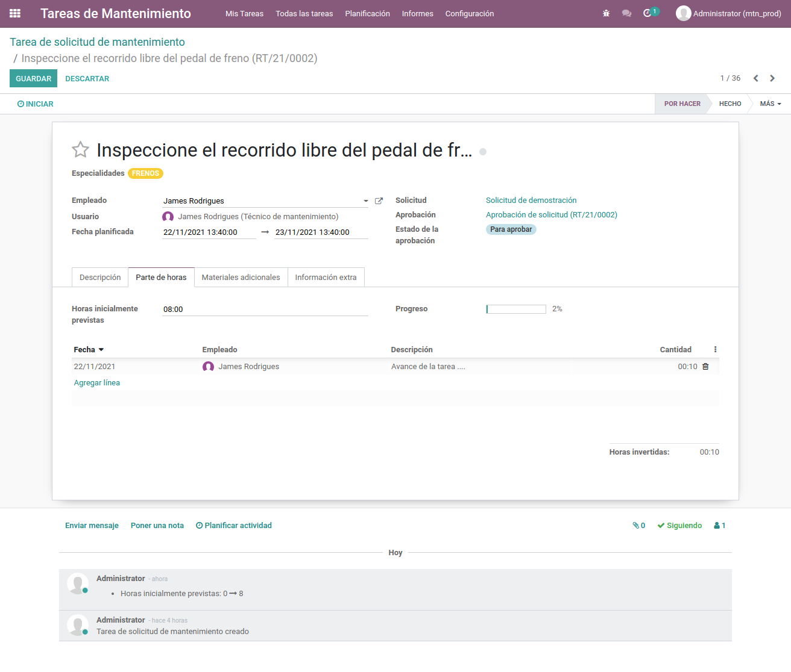
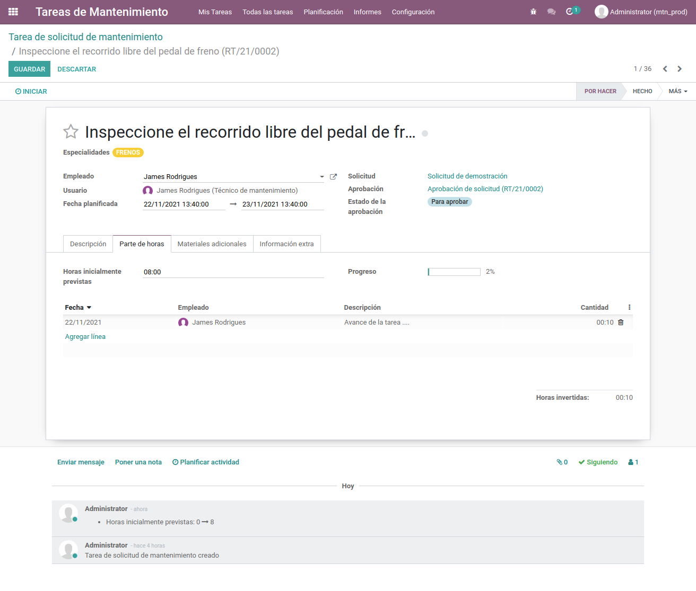

Enterprise
Módulo personalizado
Este módulo incluye las customizaciones relacionadas al mantenimiento preventivo y correctivo de vehículos.
Mantenedor de Especialidades
Mantenedor de Actividades
Mantenedor de Pautas Generales
Customización de Máquinarias y Herramientas
Customización de Peticiones de Mantenimiento
Tareas de Mantenimiento
Se agrega el modelo de especialidades para el registro del nombre y la tag de color asignado para su identificación. Se encuentra en la ruta Mantenimiento/Configuración/Especialidades
Se agrega el modelo de Actividades para el registro del código, nombre, actividad padre (dependiente), Descripción, una lista de enlaces y la posibilidad de registrar archivos asociados a la actividad. Se encuentra en la ruta Mantenimiento/Configuración/Actividades.
Se customizo el modelo de pautas asociado a uno o varios equipos y registrar la lista de actividades que se deben cumplir para levantar dicha pauta. Se encuentra en la ruta Mantenimiento/Configuración/Pautas generales.
Se añadió la jerarquía de equipos de mantenimiento y una imágen en la vista form y kanban.
Se añadió la posibilidad de seleccionar una o muchas pautas relacionadas a un equipo
las cuales generan una tarea por actividad asociada a cada pauta.
Haciendo click en el botón de tareas se visualiza la vista de lista para el administrador
permitiendo la asignación de un empleado responsable de la tarea.
Se creó un mantenedor de las tareas generadas a partir de las solicitudes que se encuentren en estado en progreso, Las cuales permite la solicitud de materiales adicionales a los registrados en la petición de mantenimiento con previa aprobación. Así mismo, permite el registro de la fecha planeada y el parte de horas relacionadas a la tarea.
 
